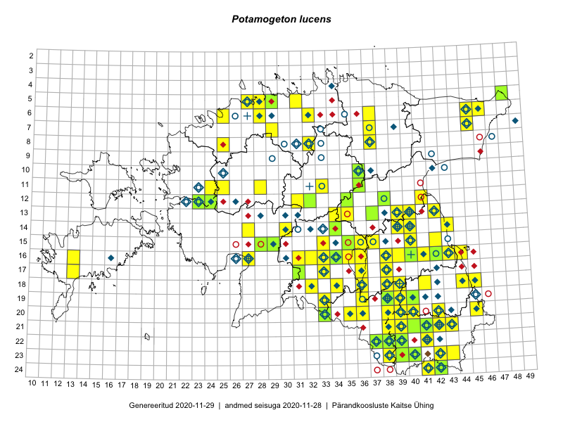

Potamogeton lucens — läik-penikeel
Kaardile koondatud taksonid: Potamogeton lucens L. (87)

← Potamogeton gramineus | tagasi liigiloendi juurde | Potamogeton lucens × Potamogeton perfoliatus →
Kaart põhineb 87 kirjel, neist:
vaatlusi 52
eksemplare 35
Kaasaegsed1 leiukohad asuvad 61 ruudus.
Andmed “Eesti taimede levikuatlasest”,2 sulgudes ruutude arv:3
● 1971–2005 (104)
○ 1921–1970 (31)
△ kuni 1920 (0)
+ hävinud (0)
? kaheldav (0)
Lisaruudud teistest andmebaasidest:4
ELF: 2006– . . . (0)
PKÜ: 2006– . . . (0)
ELF: 1971–2005 (0)
PKÜ: 1997–2005 (4)
| Ruut | Vaatleja(d) | Vaatlusaeg | Kirje PlutoFis |
|---|---|---|---|
| 20-45 | Katrit Karus, Tõnu Feldmann | 2015-07-27 | ruut/ala: Potamogeton lucens L. |
| 16-33 | Tõnu Feldmann, Katrit Karus | 2015-07-31 | ruut/ala: Potamogeton lucens L. |
| 16-32 | Tõnu Feldmann, Katrit Karus | 2015-07-31 | ruut/ala: Potamogeton lucens L. |
| 13-42 | Katrit Karus, Tõnu Feldmann | 2015-07-29 | ruut/ala: Potamogeton lucens L. |
| 13-35 | Katrit Karus, Tõnu Feldmann | 2015-08-03 | ruut/ala: Potamogeton lucens L. |
| 13-35 | Katrit Karus, Tõnu Feldmann | 2015-08-05 | ruut/ala: Potamogeton lucens L. |
| 13-34 | Katrit Karus, Tõnu Feldmann | 2015-08-03 | ruut/ala: Potamogeton lucens L. |
| 13-34 | Katrit Karus, Tõnu Feldmann | 2015-08-03 | ruut/ala: Potamogeton lucens L. |
| 13-34 | Katrit Karus, Tõnu Feldmann | 2015-08-05 | ruut/ala: Potamogeton lucens L. |
| 06-32 | Katrit Karus, Tõnu Feldmann | 2015-08-04 | ruut/ala: Potamogeton lucens L. |
| 06-32 | Katrit Karus, Tõnu Feldmann | 2015-08-04 | ruut/ala: Potamogeton lucens L. |
| 05-31 | Katrit Karus, Tõnu Feldmann | 2015-08-04 | ruut/ala: Potamogeton lucens L. |
| 20-45 | Toomas Kukk, Timo Luhamäe, Kersti Tambets, Sten Mander, Janika Sammasto | 2014-07-30 | ruut/ala: Potamogeton lucens L. |
| 07-29 | Toomas Kukk, Thea Kull | 2014-08-20 | ruut/ala: Potamogeton lucens L. |
| 23-38 | Eeva-Maria Jeletsky, Tarmo Niitla | 2015-07-15 | ruut/ala: Potamogeton lucens L. |
| 11-24 | Aat Sarv | 2015-06-24 | ruut/ala: Potamogeton lucens L. |
| 22-38 | Kadi Palmik, Helle Mäemets | 2015-08-19 | ruut/ala: Potamogeton lucens L. |
| 15-33 | Kadi Palmik, Helle Mäemets | 2015-08-14 | ruut/ala: Potamogeton lucens L. |
| 18-36 | Helle Mäemets, Mare Leis | 2015-06-24 | ruut/ala: Potamogeton lucens L. |
| 15-36 | Helle Mäemets, Mare Leis | 2015-07-06 | ruut/ala: Potamogeton lucens L. |
| 22-38 | Kadi Palmik, Helle Mäemets | 2015-08-19 | ruut/ala: Potamogeton lucens L. |
| 16-35 | Aat Sarv | 2015-07-01 | ruut/ala: Potamogeton lucens L. |
| 11-25 | Hanna-Eliisa Luts, Tõnu Ploompuu | 2015-07-28 | ruut/ala: Potamogeton lucens L. |
| 11-28 | Hanna-Eliisa Luts, Tõnu Ploompuu | 2015-07-21 | ruut/ala: Potamogeton lucens L. |
| 12-41 | Eeva-Maria Jeletsky, Tarmo Niitla | 2016-06-04 | ruut/ala: Potamogeton lucens L. |
| 22-37 | Silvia Pihu | 2015-06-27 | ruut/ala: Potamogeton lucens L. |
| 11-33 | Tõnu Ploompuu, Marko Veinbergs, Eerik Leibak | 2016-07-22 | ruut/ala: Potamogeton lucens L. |
| 13-40 | Ulvi Selgis | 2016-08-12 | ruut/ala: Potamogeton lucens L. |
| 12-31 | Aat Sarv, Indrek Tammekänd | 2016-07-22 | ruut/ala: Potamogeton lucens L. |
| 16-27 | Tiit Hallikma, Tõnu Ploompuu | 2016-06-20 | ruut/ala: Potamogeton lucens L. |
| 14-30 | Hannes Pehlak, Tõnu Ploompuu, Marko Veinbergs | 2016-07-21 | ruut/ala: Potamogeton lucens L. |
| 16-31 | Elle Rajandu, Indrek Tammekänd | 2016-07-20 | ruut/ala: Potamogeton lucens L. |
| 06-46 | Katrit Karus, Tõnu Feldmann | 2017-08-09 | ruut/ala: Potamogeton lucens L. |
| 06-37 | Katrit Karus, Tõnu Feldmann | 2017-07-07 | ruut/ala: Potamogeton lucens L. |
| 16-34 | Tõnu Feldmann, Katrit Karus | 2017-07-03 | ruut/ala: Potamogeton lucens L. |
| 06-45 | Tõnu Feldmann, Katrit Karus | 2017-07-06 | ruut/ala: Potamogeton lucens L. |
| 08-25 | Helle Mäemets, Kadi Palmik | 2017-07-16 | ruut/ala: Potamogeton lucens L. |
| 16-39 | Kadi Palmik, Helle Mäemets | 2015-07-22 | ruut/ala: Potamogeton lucens L. |
| 18-41 | Kadi Palmik, Helle Mäemets | 2015-08-13 | ruut/ala: Potamogeton lucens L. |
| 15-40 | Kadi Palmik, Helle Mäemets | 2015-07-24 | ruut/ala: Potamogeton lucens L. |
| 10-36 | Kadi Palmik, Helle Mäemets | 2015-07-21 | ruut/ala: Potamogeton lucens L. |
| 17-36 | Helle Mäemets, Mare Leis, Malle Timm | 2015-06-25 | ruut/ala: Potamogeton lucens L. |
| 22-37 | Silvia Pihu | 2015-06-27 | punkt: Potamogeton lucens L. |
| 06-46 | Katrit Karus, Tõnu Feldmann | 2017-08-09 | ruut/ala: Potamogeton lucens L. |
| 16-34 | Tõnu Feldmann, Katrit Karus | 2017-07-03 | punkt: Potamogeton lucens L. |
| 15-37 | Helle Mäemets | 2015-07-05 | ruut/ala: Potamogeton lucens L. |
| 16-36 | Helle Mäemets, Mare Leis, Jaak-Albert Metsoja | 2015-07-05 | ruut/ala: Potamogeton lucens L. |
| 20-39 | Ilmar Uibopuu, Marko Vainu, Kadri Kuusksalu | 2018-07-14 | ruut/ala: Potamogeton lucens L. |
| 12-38 | Ulvi Selgis | 2018-07-31 | ruut/ala: Potamogeton lucens L. |
| 16-33 | Mari Reitalu, Thea Kull | 2019-08-27 | ruut/ala: Potamogeton lucens L. |
| 19-39 | Thea Kull | 2019-07-10 | punkt: Potamogeton lucens L. |
| 14-27 | Ott Luuk, Indrek Tammekänd | 2017-08-11 | punkt: Potamogeton lucens L. |
| 05-29 | J.-M. Habicht | 2006-07-04 | TAM0004087: Potamogeton lucens L. |
| 05-29 | J.-M. Habicht | 2006-07-04 | TAM0004090: Potamogeton lucens L. |
| 15-29 | Peedu Saar, Liina Oja | 2015-06-11 | TAA0116514: Potamogeton lucens L. |
| 20-33 | Jana-Maria Habicht | 2014-07-12 | TAM0122495: Potamogeton lucens L. |
| 22-39 | Jana-Maria Habicht | 2014-07-30 | TAM0122496: Potamogeton lucens L. |
| 22-37 | Silvia Pihu | 2015-06-27 | TU309720: Potamogeton lucens L. |
| 13-37 | Toomas Kukk, Ilmar Uibopuu | 2017-08-07 | TAA0141674: Potamogeton lucens L. |
| 13-37 | Toomas Kukk, Ilmar Uibopuu | 2017-08-07 | TAA0141675: Potamogeton lucens L. |
| 13-37 | Toomas Kukk, Ilmar Uibopuu | 2017-08-07 | TAAdupl0141675: Potamogeton lucens L. |
| 13-37 | Toomas Kukk, Ilmar Uibopuu | 2017-08-07 | TAAdupl0141675_2: Potamogeton lucens L. |
| 12-32 | Thea Kull, Ott Luuk | 2017-08-07 | TAA0142305: Potamogeton lucens L. |
| 14-34 | Peedu Saar, Timo Luhamäe | 2017-08-07 | TAA0141041: Potamogeton lucens L. |
| 15-35 | Peedu Saar, Ott Luuk | 2017-06-20 | TAA0141058: Potamogeton lucens L. |
| 15-35 | Peedu Saar, Ott Luuk | 2017-06-20 | TAA0141059: Potamogeton lucens L. |
| 17-31 | Toomas Kukk | 2017-08-29 | TAA0141837: Potamogeton lucens L. |
| 10-36 | Elle Rajandu, Karin Kikas | 2016-06-30 | TAA0141517: Potamogeton lucens L. |
| 10-36 | Elle Rajandu, Karin Kikas | 2016-06-30 | TAA0141518: Potamogeton lucens L. |
| 19-38 | Ott Luuk, Peedu Saar | 2017-07-25 | TAA0142761: Potamogeton lucens L. |
| 19-38 | Ott Luuk, Peedu Saar | 2017-07-25 | TAA0142762: Potamogeton lucens L. |
| 16-34 | Ott Luuk, Thea Kull | 2017-06-22 | TAA0142866: Potamogeton lucens L. |
| 05-48 | Peedu Saar, Polina Degtjarenko | 2018-08-30 | TAA0146870: Potamogeton lucens L. |
| 12-38 | Ulvi Selgis | 2018-07-31 | TAA0142390: Potamogeton lucens L. |
| 16-40 | Arvo Tuvikene | 2006-06-27 | TAA2002990: Potamogeton lucens L. |
| 22-37 | Timo Luhamäe, Peedu Saar | 2019-07-10 | TAA0149898: Potamogeton lucens L. |
| 12-23 | Toomas Kukk, Peedu Saar | 2019-08-30 | TAA0148570: Potamogeton lucens L. |
| 15-29 | Toomas Kukk, Peedu Saar | 2019-08-29 | TAA0148584: Potamogeton lucens L. |
| 15-29 | Toomas Kukk, Peedu Saar | 2019-08-29 | TAA0148585: Potamogeton lucens L. |
| 11-36 | Peedu Saar | 2019-08-10 | TAA0149514: Potamogeton lucens L. |
| 24-42 | Peedu Saar, Toomas Kukk | 2019-07-31 | TAA0149516: Potamogeton lucens L. |
| 22-38 | Peedu Saar, Timo Luhamäe | 2019-07-10 | TAA0149527: Potamogeton lucens L. |
| 21-41 | Indrek Tammekänd, Toomas Kukk | 2019-07-10 | TAA0151767: Potamogeton lucens L. |
| 21-40 | Indrek Tammekänd, Toomas Kukk | 2019-07-10 | TAA0151771: Potamogeton lucens L. |
| 19-40 | Meeli Mesipuu | 2019-07-12 | TAA0151159: Potamogeton lucens L. |
| 12-24 | Timo Luhamäe, Peedu Saar | 2017-08-09 | TAA0152094: Potamogeton lucens L. |
| 12-24 | Timo Luhamäe, Peedu Saar | 2017-08-09 | TAA0152095: Potamogeton lucens L. |
Kaasaegsed leiukohad (tähistatud värvitud ruutudega) põhinevad peamiselt 2014–2019 välitööandmetel. Väiksemal määral on andmebaasi kantud vanemaid leiuandmeid aastatest 2006–2013.↩︎
Kukk, T., Kull, T., Eesti taimede levikuatlas. Eesti Maaülikool, Põllumajandus- ja Keskkonnainstituut, Tartu, 2005.↩︎
NB! 2005. aasta atlase andmestikus katavad uuemad leiud vanemaid. Näiteks kui liik on ruudus registreeritud 1971–2005, siis pole võimalik öelda, kas ta oli sellest ruudust teada ka enne 1970. aastat. Vana atlase andmetel hävinud ja kaheldavaid leiukohti pole hilisemate (taas)leidude põhjal korrigeeritud.↩︎
Eestimaa Looduse Fondi (ELF) ja Pärandkoosluste Kaitse Ühingu (PKÜ) andmebaasid sisaldavad inventeeritud koosluste kirjeldusi ja liigiloendeid. Neist andmekogudest on kaardile lisatud lisatud vaid need ruudud, millest uue atlase andmekogus taksoni kohta kirjeid veel pole. Kõrvale on jäetud teadaolevalt kaheldavad määrangud. Kaartidel katavad uuema perioodi andmed vanemaid, PKÜ omad ELFi omi. Kattumise tõttu võib kaardil näha olla vähem mingi kategooria ruute kui legendis olev arv näitab. ELFi ja PKÜ andmed ei kajastu hetkel vaatluste tabelis ega ruutude liigiloendites.↩︎